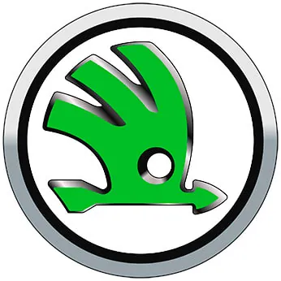
Работы по Škoda
 Диагностика дизельных двигателей Шкодаот 1 500 ₽
Диагностика дизельных двигателей Шкодаот 1 500 ₽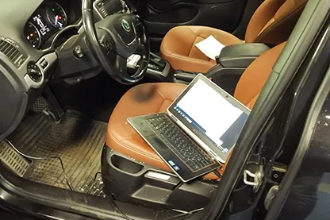
Полная диагностика Шкодаот 1 050 ₽ Ремонт АКПП Шкодаот 10 000 ₽
Ремонт АКПП Шкодаот 10 000 ₽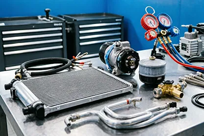
Ремонт автокондиционеров Шкодаот 450 ₽ Ремонт DSG Skodaот 35 000 ₽
Ремонт DSG Skodaот 35 000 ₽ Ремонт двигателей Шкодаот 1 500 ₽
Ремонт двигателей Шкодаот 1 500 ₽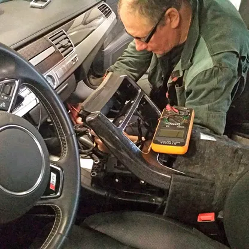
Ремонт электрики Шкодаот 1 500 ₽ Ремонт ГБЦ Шкодаот 3 000 ₽
Ремонт ГБЦ Шкодаот 3 000 ₽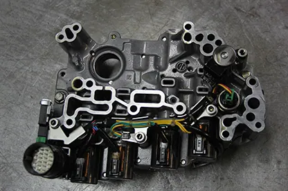
Ремонт гидроблока Шкодаот 1 500 ₽ Ремонт гидротрансформатора АКПП Шкодаот 4 500 ₽
Ремонт гидротрансформатора АКПП Шкодаот 4 500 ₽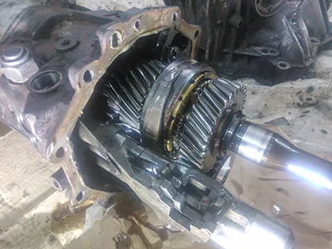
Ремонт МКПП Škodaот 9 000 ₽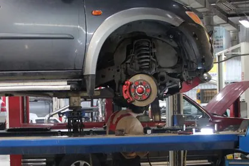
Ремонт подвески Skodaот 360 ₽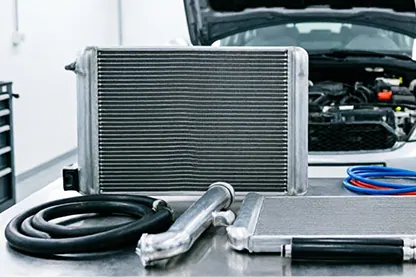
Ремонт радиатора кондиционера Шкодаот 1 500 ₽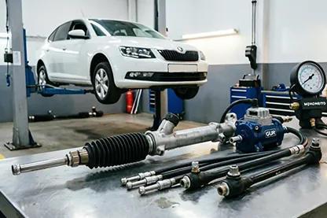
Ремонт рулевого управления Шкодаот 600 ₽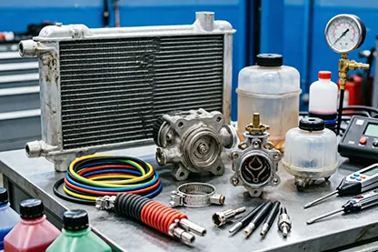
Ремонт системы охлаждения Шкодаот 900 ₽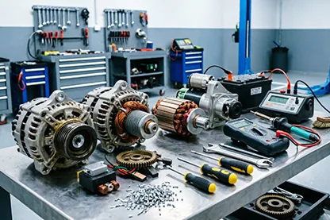
Ремонт стартеров Skodaот 3 000 ₽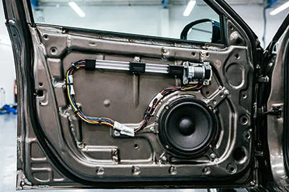
Ремонт стеклоподъемников Шкодаот 1 050 ₽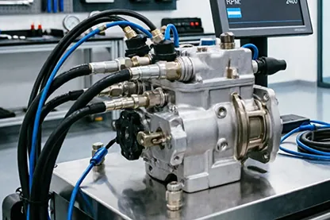
Диагностика ТНВД и дизельных форсунок Шкодаот 1 500 ₽ Ремонт топливной системы Шкодаот 600 ₽
Ремонт топливной системы Шкодаот 600 ₽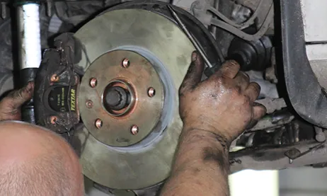
Ремонт тормозной системы Шкода Ремонт трапеции стеклоочистителя Шкодаот 1 200 ₽
Ремонт трапеции стеклоочистителя Шкодаот 1 200 ₽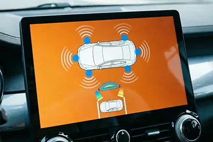
Установка парктроника на Шкода Установка Webasto на Шкодаот 9 000 ₽
Установка Webasto на Шкодаот 9 000 ₽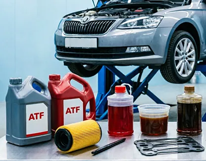
Замена масла в АКПП Шкодаот 1 500 ₽ Замена масла в двигателе Skodaот 750 ₽
Замена масла в двигателе Skodaот 750 ₽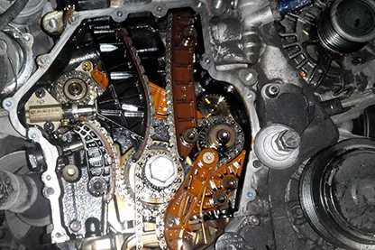
Замена ремня ГРМ Skodaот 3 950 ₽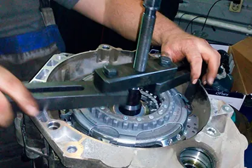
Замена сцепления DSG на SkodaНаш автотехцентр рад приветствовать владельцев компактных автомобилей, производимых чешской компанией Шкода. Машины Skoda отвечают требованиям водителей, разных категорий, но сложность конструкции автомобилей по их начинке заставляет нас уделять особое внимание обслуживанию и ремонту.
Современное оборудование помогает нам диагностировать такие поломки как: подёргивание коробок передач, повышенный расход горюче-смазочных материалов, а также наши специалисты без проблем устранят неприятные стуки в подвеске, заменят ремень ГРМ и произведут плановое техническое обслуживание.
Диагностика автомобилей Шкода
Специалистами нашего сервиса осуществляется точечная (в пределах одного узла) и полная диагностика автомобиля. Все работы производятся с применением нового высокоточного оборудования и компьютерных технологий.
Мы проводим диагностику и ремонт:
- двигателя;
- тормозной системы;
- электронных систем автомобиля;
- состояния подвески;
- других узлов и агрегатов.
Наше оборудование, позволяет выявить даже небольшие неисправности и вовремя их устранить, не доводя до дорогостоящего ремонта.
Регулярное техническое обслуживание автомобилей
В нашем техцентре предоставляется весь спектр услуг по ТО автомобилей. Ведущие специалисты компании рекомендуют автовладельцам проходить техническое обслуживание автомобиля через каждые 20 тыс. пробега, а при неблагоприятных режимах эксплуатации транспортного средства – еще чаще.
Обслуживание включает своевременную замену машинного и трансмиссионного масла, фильтров, колодок, свечей зажигания, несущих сайлентблоков подвески, ремня ГРМ и других расходных материалов.
Кроме того, обслуживание включает:
- химчистку салона;
- промывку радиатора;
- промывку систем впрыска топлива;
- сход-развал;
- шиномонтаж;
- другие работы.
Цены на ремонт Skoda
| Наименование услуги | Цена, руб. |
|---|---|
| Техническое обслуживание (без стоимости расходных материалов) | По запросу |
| Замена масла и фильтра в двигателе | По запросу |
| Замена свечей зажигания | По запросу |
| Замена воздушного фильтра | По запросу |
| Замена салонного фильтра | По запросу |
| Замена топливного фильтра | По запросу |
| Замена масла и фильтра в АКПП | По запросу |
| Замена передних колодок | По запросу |
| Замена задних колодок | По запросу |
| Замена передних тормозных дисков | По запросу |
| Замена задних тормозных дисков | По запросу |
| Замена тормозной жидкости | По запросу |
| Заправка кондиционера | По запросу |
| Мойка радиаторов | По запросу |
| Компьютерная диагностика | По запросу |
| Ведомый поиск неисправностей | По запросу |
| Сброс ошибок | По запросу |
| Диагностика АКПП (автоматической коробки) | По запросу |
| Диагностика ходовой части (подвески) | По запросу |
| Диагностика электрооборудования | По запросу |
| Диагностика дополнительного подогревателя | По запросу |
| Диагностика кондиционера | По запросу |
| Диагностика электроусилителя руля | По запросу |
| Замена верхнего рычага | По запросу |
| Замена заднего амортизатора | По запросу |
| Замена переднего амортизатора, опорного подшипника и пружины | По запросу |
| Замена пневмобаллонов | По запросу |
| Замена поворотных кулаков | По запросу |
| Замена подшипника ступицы | По запросу |
| Замена поперечного рычага | По запросу |
| Замена приводного вала в сборе | По запросу |
| Замена продольного рычага | По запросу |
| Замена пыльника ШРУСа | По запросу |
| Замена рулевого наконечника | По запросу |
| Замена рулевой тяги | По запросу |
| Замена сайлент-блока (на снятом рычаге) | По запросу |
| Замена стойки стабилизатора | По запросу |
| Замена шаровой опоры | По запросу |
| Замена ШРУСа | По запросу |
| С/у рулевой рейки внедорожника | По запросу |
| С/у рулевой рейки легкового а/м | По запросу |
| Замена сервомотора электрического стояночного тормоза | По запросу |
| Замена тормозных шлангов | По запросу |
| Стоимость капитального ремонта АКПП | По запросу |
| Стоимость текущего ремонта АКПП | По запросу |
* Если не нашли необходимой услуги, обратитесь к нам, и мы подскажем стоимость ремонта автомобиля Skoda. Цены варьируются в зависимости от комплектации и марки, точную стоимость можно узнать по телефону +7 (495) 632-01-20, либо в разделе " Вопрос-Ответ".
Фотогалерея - ремонт автомобилей Skoda
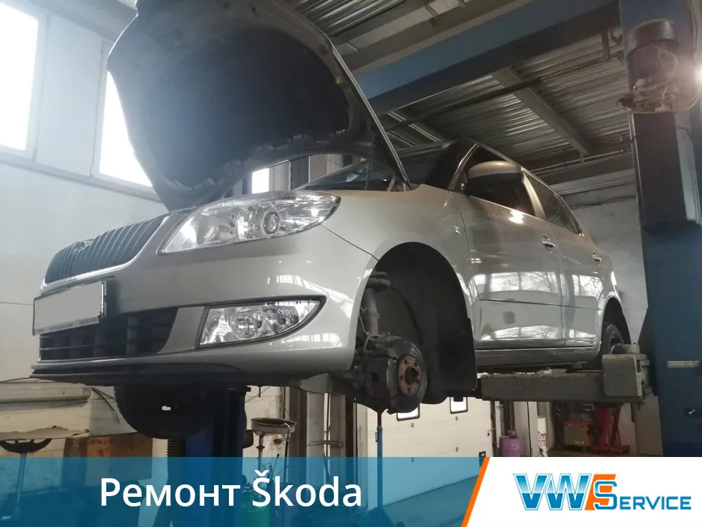
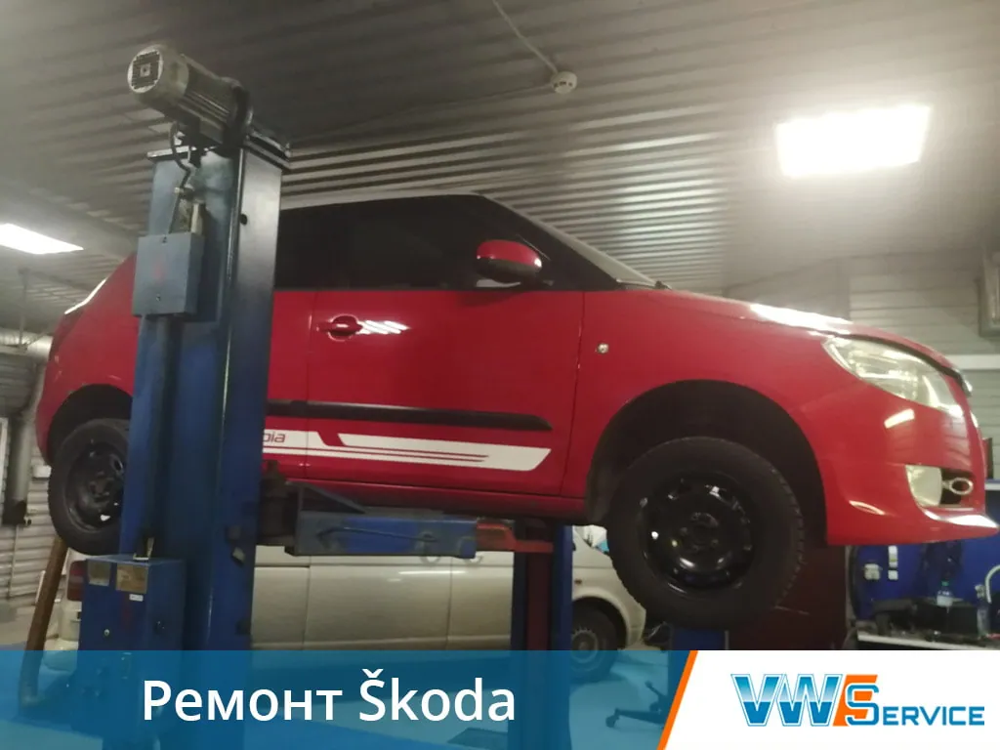
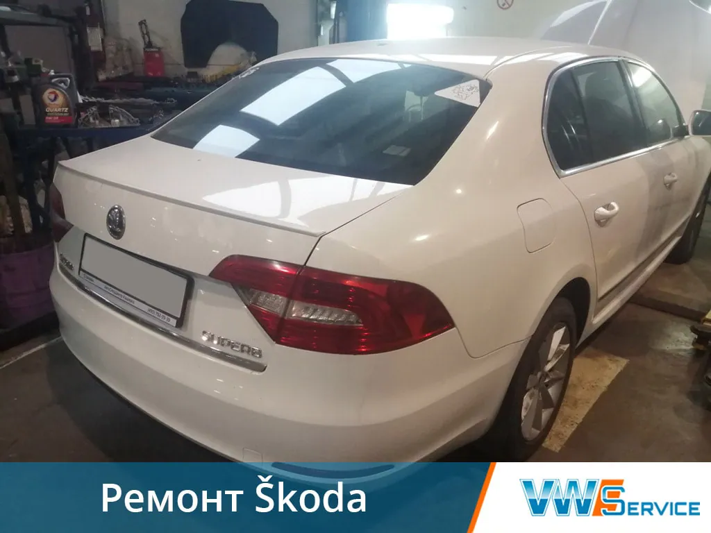
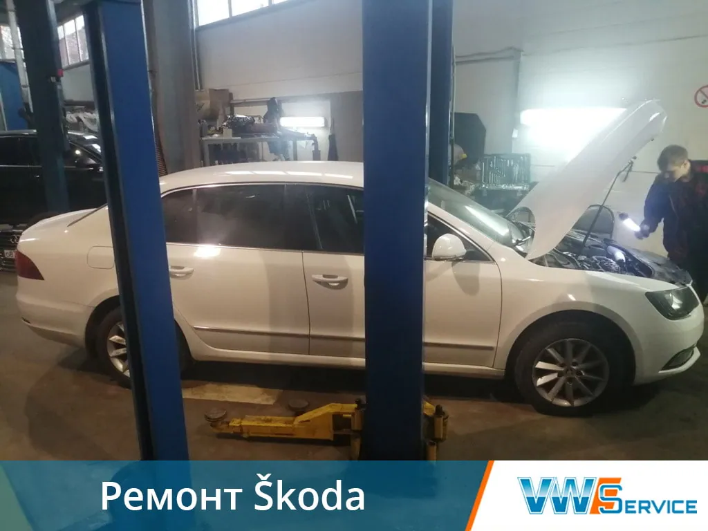
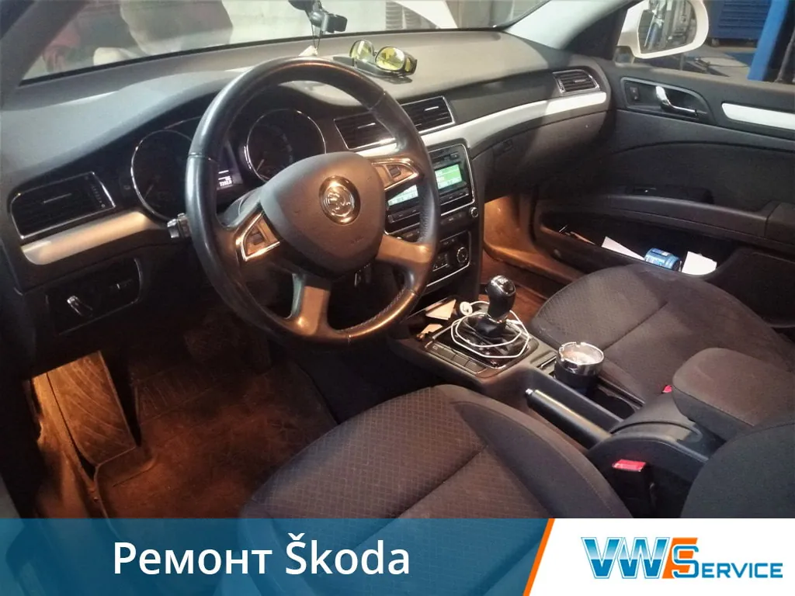
Выберите услугу
Слесарный ремонт ТО
Замена моторного маслаРемонт подвескиРемонт тормозной системыРемонт рулевого управленияРемонт двигателей (ДВС)Ремонт ГБЦЗамена ремня ГРМРемонт системы охлажденияДизельная аппаратура
ТНВД, насос форсункиДиагностика дизельных двигателейРемонт трансмиссий DSG АКПП МКПП
Ремонт гидротрансформатораРемонт АКППРемонт DSGРемонт гидроблокаЗамена масла в АКППРемонт МКППЗамена сцепления DSGЭлектрооборудование
Полная диагностикаРемонт топливной системыРемонт электропроводкиРемонт стартеров и генераторовРемонт стеклоподъемниковРемонт трапеции стеклоочистителяАвтономные отопители, автокондиционеры, аргон
Ремонт автокондиционераРемонт радиатора кондиционераУстановка WebastoУстановка оборудования
Установка парктроникаВ нашем автосервисе
Ремонт Шкода Техническое обслуживание,
Высокое качество работ,
Есть запчасти и расходные материалы
от 1500 руб.
Записаться на обслуживание
Отзывы клиентов
Приезжаю в этот автосервис на техническое обслуживание и ремонт своей Шкода Фабиа. Хороший сервис, ремонтируют быстро, есть расходные автозапчасти и кафетерий, где можно подождать пока закончат все работы. Стоимость не выше, чем в других техцентрах.
Анжелика
Модель авто: Skoda Fabia
08.02.2021
После посещения нескольких сервисов, могу сказать, что из всех устраивает только VWS. Очень грамотный диагност и приветливые мастера. Спасибо.
Ольга
Модель авто: Шкода
07.09.2020
Хороший сервис! Раньше отец чинил там свой VW Passat B3. Теперь я чиню там свою Шкоду Октавия! Всё нравится! Делают быстро, качественно, надёжно, с клиентами обходительны! Респект!
Евгений
Модель авто: Skoda Octavia Tour
05.04.2019
Делал в Вашем сервисе ТО 45 т.км, недавно приезжал на ТО 60 т.км., сын также ремонтирует у Вас свой автомобиль. Спасибо, адекватные цены, хорошее обслуживание, качественный ремонт, появилась возможность оплаты картой.
Олег
Модель авто: Шкода Октавия А5
16.10.2018
Стала стучать подвеска, обратился в техцентр VWS, сказали, что нужно менять опоры и рычаги подвески, по причине изношенности. Работу выполнили в течении трех дней, езжу уже неделю, посторонние звуки исчезли. Дали гарантию на свою работу. Понравилось обслуживание, приеду на ТО машины к Вам!
Борис
Модель авто: Yeti
05.03.2016
Контакты
- г. Москва, 1-й Дорожный проезд, д. 5АЮАО Москвы. Ближайшее метро — «Южная»
- Ежедневно с 8:30 до 20:30Без выходных. Приём автомобилей — круглосуточно
- +7 (495) 260-06-02Эвакуатор: +7 (495) 796-29-99